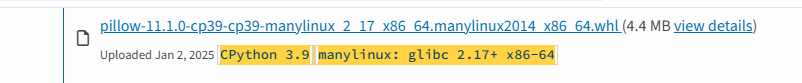

AWS Lambda 使用 Python 套件的紀錄
在 AWS Lambda 開發 Python 應用程式時，當遇到以下錯誤時：
Unable to import module 'lambda_function': No module named 'PIL' |
表示 Lambda 缺少 PIL（Pillow）套件，需要手動安裝並上傳 Layer。這篇文章記錄解決的方法，以下的範例用安裝 Pillow 舉例，透過製作 AWS Lambda 層所需要的 ZIP 檔案或用 Docker 容器來建置映像檔來解決。
本地安裝套件並壓縮上傳（適用 Linux）
這種方式適合簡單的套件管理，可以在本機完成所有依賴安裝，然後上傳到 AWS Lambda。
步驟
- 建立一個新的資料夾，例如
lambda_package：mkdir lambda_package
cd lambda_package - 安裝所需的套件到該資料夾內：
pip install -t . pillow
- 命名資料夾為
python，並壓縮成 ZIP 檔案，上傳到Layer：mv lambda_package python
zip -r package.zip python
Windows 的限制
上述方法適用於 Linux 環境，但在 Windows 上會缺少相關依賴，導致 Lambda 執行錯誤。例如 pillow 就會缺少
pillow.libs/的資料夾；不過一些較簡單的套件不會有這問題，例如requests因為它們只依賴標準 Python 庫。替代方案：
用 Docker 快速啟動環境 Amazon Linux，然後建立對應版本的虛擬環境，安裝套件並壓縮成 ZIP。
docker run -it amazonlinux:2023 bash
sudo apt install python3.9-venv
python3.9 -m venv venv
source venv/bin/activate
pip install pillow -t python
zip -r package.zip python使用
docker cp抓出 ZIP，上傳到Layerdocker cp <容器ID>:<容器內檔案路徑> <本機儲存路徑>
# 複製到本地
docker cp <容器ID>:/root/package.zip .
到 PyPI 下載套件
前往 PyPI 搜尋 Pillow，並確保選擇對應的 Python 版本（如 3.9）與 Linux 版本

下載後，將
.whl副檔名改為.zip，再解壓縮：mv pillow-11.1.0-cp39-cp39-manylinux_2_28_x86_64.whl pillow-11.1.0.zip
unzip pillow-11.1.0.zip -d python
zip -r package.zip python上傳
package.zip到 AWS Lambda 層。
使用 Docker 容器來部署 Lambda 程式
當使用較大的套件或有特殊需求時，建立 Lambda 可使用容器映像來建立，會比較快。
前置準備
需要先安裝並配置 AWS CLI，參考 AWS CLI 官方文件。
步驟
- **建立
Dockerfile**：FROM public.ecr.aws/lambda/python:3.9
COPY app.py requirements.txt ./
RUN pip install -r requirements.txt
# 設定 Lambda 進入點
CMD ["app.lambda_handler"] - 建立
requirements.txt，把所需套件寫入：pillow
- **建立 Lambda 函式
app.py**：import json
from PIL import Image
def lambda_handler(event, context):
img = Image.new("RGB", (10, 10), color=(255, 0, 0))
return {
"statusCode": 200,
"body": "Pillow 測試成功！"
} - 建立 Docker 映像並推送至 AWS ECR：
# 打包 Docker 映像
docker build -t my-lambda-function .
# 登入 AWS ECR
# <aws-account-id> AWS 帳號 ID，
# <region> 替換為 AWS 區域（例如 us-east-1）。
aws ecr get-login-password | docker login --username AWS --password-stdin <aws-account-id>.dkr.ecr.<region>.amazonaws.com
# 建立 ECR 倉儲
aws ecr create-repository --repository-name my-lambda-function
# 標記 (tag) & 推送映像檔
docker tag my-lambda-function:latest <aws-account-id>.dkr.ecr.<region>.amazonaws.com/my-lambda-function:latest
docker push <aws-account-id>.dkr.ecr.<region>.amazonaws.com/my-lambda-function:latest - 在 AWS Lambda 建立中，選擇「容器映像」作為執行環境，並選擇剛剛建立的映象檔案
其它
- Lambda 層的固定規則：
- 壓縮檔只接受 ZIP 格式。
- 壓縮檔內套件的目錄名稱必須為
python，否則 Lambda 會無法讀取。
- Lambda 容器部署範例：S3 PDF 轉圖片
🔗 GitHub 範例程式碼：Lambda PDF Converter
結論
| 方法 | 敘述 |
|---|---|
| 本地環境壓縮 ZIP（Linux） | 簡單直接，可快速上傳 Lambda 層 |
從 PyPI 下載 .whl 轉 .zip |
適合在不同本地環境下載適用的 .whl |
| 使用 Docker 容器 | 支援複雜依賴 |